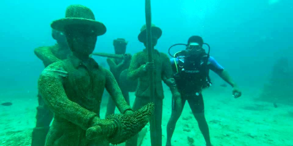

7. Underwater Museum - Galle |
|  |
On April 5, 2020, Vice Admiral Piyal De Silva, Commander of the Navy, declared open Sri Lanka's first-ever underwater museum off the coast of Galle.At the request of Prime Minister Mahinda Rajapaksa, this underwater museum was created off the coast of Galle under the careful supervision of the Commander of the Navy. The Sri Lanka Navy's manpower was used to complete the construction work. This unique museum is located off the coast of Galle, a popular tourist destination for both local and international visitors. A huge collection of artefacts and sculptures created by the Navy has also been displayed. |
Distance from Katunayaka Airport : 150 km and it takes about 2 to 2 ½ hours |